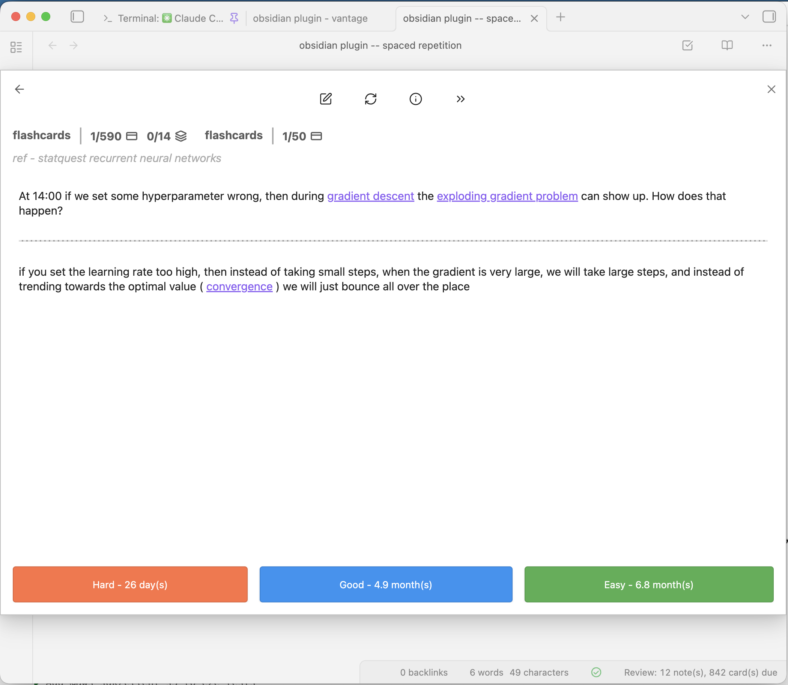

example - obsidian spaced repetition plugin card for learning about neural networks
^ example - obsidian plugin -- spaced repetition card for learning about neural networks
Uses obsidian plugin -- spaced repetition
If you structure your notes in a specific way, the obsidian plugin -- spaced repetition will list them and quiz you on them using spaced repetitions exponential backoff.
Here you can see one of the cards (after the answer is revealed) from the ref - statquest recurrent neural networks page:
